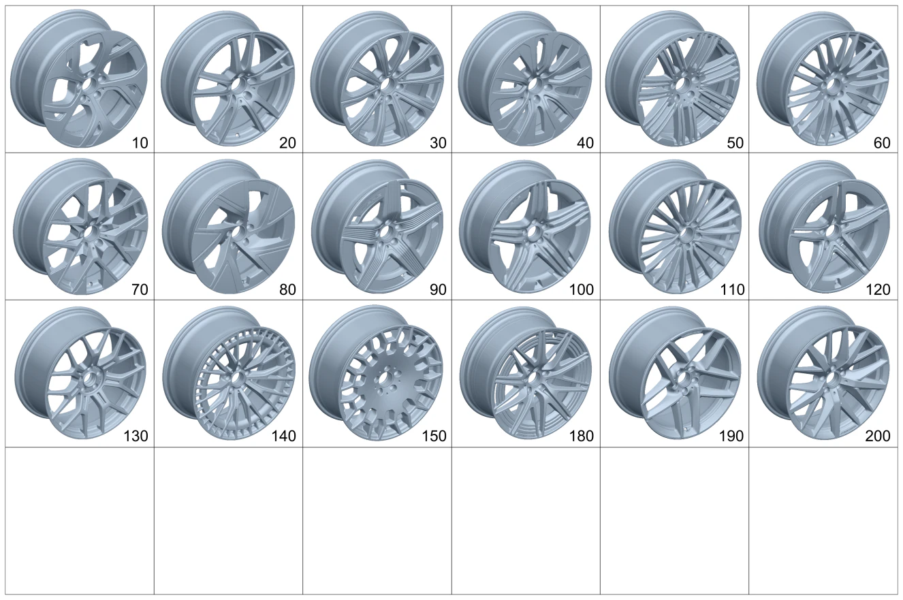

| № | Артикул | Название | Кол. | Примечание | Ограничение |
|---|---|---|---|---|---|
| 10 | A 254 401 01 00 | Дисковое колесо | 2 | Передний мост; 8J X 18 H2 ET 32,5 [-] Ознакомиться с инструкцией по выполнению работ в WIS-NET#GF40.10-P-0804B# | R31 |
| 10 | A 254 401 01 00 | Дисковое колесо | 2 | Передний мост; 8J X 18 H2 ET 32,5 [-] Ознакомиться с инструкцией по выполнению работ в WIS-NET#GF40.10-P-0804B# | R32 |
| 10 | A 254 401 01 00 | Дисковое колесо | 2 | Задний мост; 8J X 18 H2 ET 32,5 [-] Ознакомиться с инструкцией по выполнению работ в WIS-NET#GF40.10-P-0804B# | R31 |
| 10 | A 254 401 47 00 | Дисковое колесо | 2 | Задний мост; 9J X 18 H2 ET 30 [-] Ознакомиться с инструкцией по выполнению работ в WIS-NET#GF40.10-P-0804B# | R32 |
| 10 | A 254 401 01 00 | Дисковое колесо | 2 | Передний мост; 8J X 18 H2 ET 32,5 [-] Ознакомиться с инструкцией по выполнению работ в WIS-NET#GF40.10-P-0804B# | 4R3 |
| 10 | A 254 401 47 00 | Дисковое колесо | 2 | Задний мост; 9J X 18 H2 ET 30 [-] Ознакомиться с инструкцией по выполнению работ в WIS-NET#GF40.10-P-0804B# | 4R3 |
| 20 | A 254 401 46 00 | Дисковое колесо | 2 | Передний мост; 8J X 18 H2 ET 32,5 [-] Ознакомиться с инструкцией по выполнению работ в WIS-NET#GF40.10-P-0804B# | R38 |
| 20 | A 254 401 46 00 | Дисковое колесо | 2 | Задний мост; 8J X 18 H2 ET 32,5 [-] Ознакомиться с инструкцией по выполнению работ в WIS-NET#GF40.10-P-0804B# | R38 |
| 20 | A 254 401 46 00 | Дисковое колесо | 2 | Передний мост; 8J X 18 H2 ET 32,5 [-] Ознакомиться с инструкцией по выполнению работ в WIS-NET#GF40.10-P-0804B# | 2R4 |
| 20 | A 254 401 46 00 | Дисковое колесо | 2 | Задний мост; 8J X 18 H2 ET 32,5 [-] Ознакомиться с инструкцией по выполнению работ в WIS-NET#GF40.10-P-0804B# | 2R4 |
| 30 | A 254 401 45 00 | Дисковое колесо | 2 | Передний мост; 8J X18 H2 ET 32,5 [-] Ознакомиться с инструкцией по выполнению работ в WIS-NET#GF40.10-P-0804B# | R41 |
| 30 | A 254 401 45 00 | Дисковое колесо | 2 | Задний мост; 8J X18 H2 ET 32,5 [-] Ознакомиться с инструкцией по выполнению работ в WIS-NET#GF40.10-P-0804B# | R41 |
| 40 | A 254 401 51 00 | Дисковое колесо (DISK WHEEL) | 2 | Передний мост; 8J X 18 H2 ET 32,5 [-] Ознакомиться с инструкцией по выполнению работ в WIS-NET#GF40.10-P-0804B# | R74 |
| 40 | A 254 401 51 00 | Дисковое колесо (DISK WHEEL) | 2 | Задний мост; 8J X 18 H2 ET 32,5 [-] Ознакомиться с инструкцией по выполнению работ в WIS-NET#GF40.10-P-0804B# | R74 |
| 50 | A 254 401 69 00 | Дисковое колесо | 2 | Передний мост; 8J X 18 H2 ET 32,5 [-] Ознакомиться с инструкцией по выполнению работ в WIS-NET#GF40.10-P-0804B# | 14R |
| 50 | A 254 401 69 00 | Дисковое колесо | 2 | Задний мост; 8J X 18 H2 ET 32,5 [-] Ознакомиться с инструкцией по выполнению работ в WIS-NET#GF40.10-P-0804B# | 14R |
| 60 | A 254 401 48 00 | Дисковое колесо | 2 | Передний мост; 8,5J X 20 H2 ET 34,5 [-] Ознакомиться с инструкцией по выполнению работ в WIS-NET#GF40.10-P-0804B# | R42 |
| 60 | A 254 401 49 00 | Дисковое колесо (DISK WHEEL) | 2 | Передний мост; 8J X 19 H2 ET 32,5 [-] Ознакомиться с инструкцией по выполнению работ в WIS-NET#GF40.10-P-0804B# | 78R |
| 60 | A 254 401 48 00 | Дисковое колесо | 2 | Передний мост; 8,5J X 20 H2 ET 34,5 [-] Ознакомиться с инструкцией по выполнению работ в WIS-NET#GF40.10-P-0804B# | R42 |
| 60 | A 254 401 48 00 | Дисковое колесо | 2 | Задний мост; 8,5J X 20 H2 ET 34,5 [-] Ознакомиться с инструкцией по выполнению работ в WIS-NET#GF40.10-P-0804B# | R42 |
| 60 | A 254 401 49 00 | Дисковое колесо (DISK WHEEL) | 2 | Задний мост; 8J X 19 H2 ET 32,5 [-] Ознакомиться с инструкцией по выполнению работ в WIS-NET#GF40.10-P-0804B# | 78R |
| 60 | A 254 401 48 00 | Дисковое колесо | 2 | Задний мост; 8,5J X 20 H2 ET 34,5 [-] Ознакомиться с инструкцией по выполнению работ в WIS-NET#GF40.10-P-0804B# | R42 |
| 60 | A 254 401 49 00 | Дисковое колесо (DISK WHEEL) | 2 | Передний мост; 8J X 19 H2 ET 32,5 [-] Ознакомиться с инструкцией по выполнению работ в WIS-NET#GF40.10-P-0804B# | 5R2 |
| 60 | A 254 401 49 00 | Дисковое колесо (DISK WHEEL) | 2 | Задний мост; 8J X 19 H2 ET 32,5 [-] Ознакомиться с инструкцией по выполнению работ в WIS-NET#GF40.10-P-0804B# | 5R2 |
| 70 | A 254 401 50 00 | Дисковое колесо | 2 | Передний мост; 8J X 19 H2 ET 32,5 [-] Ознакомиться с инструкцией по выполнению работ в WIS-NET#GF40.10-P-0804B# | 65R |
| 70 | A 254 401 60 00 | Дисковое колесо | 2 | Передний мост; 8J X19 H2 ET 32.5 [-] Ознакомиться с инструкцией по выполнению работ в WIS-NET#GF40.10-P-0804B# | R55+(805/806) |
| 70 | A 254 401 60 00 | Дисковое колесо | 2 | Передний мост; 8J X19 H2 ET 32.5 [-] Ознакомиться с инструкцией по выполнению работ в WIS-NET#GF40.10-P-0804B# | R55 |
| 70 | A 254 401 60 00 | Дисковое колесо | 2 | Передний мост; 8J X19 H2 ET 32.5 [-] Ознакомиться с инструкцией по выполнению работ в WIS-NET#GF40.10-P-0804B# | R17+(805/806) |
| 70 | A 254 401 60 00 | Дисковое колесо | 2 | Передний мост; 8J X19 H2 ET 32.5 [-] Ознакомиться с инструкцией по выполнению работ в WIS-NET#GF40.10-P-0804B# | R17 |
| 70 | A 254 401 50 00 | Дисковое колесо | 2 | Задний мост; 8J X 19 H2 ET 32,5 [-] Ознакомиться с инструкцией по выполнению работ в WIS-NET#GF40.10-P-0804B# | 65R |
| 70 | A 254 401 60 00 | Дисковое колесо | 2 | Задний мост; 8J X19 H2 ET 32.5 [-] Ознакомиться с инструкцией по выполнению работ в WIS-NET#GF40.10-P-0804B# | R55+(805/806) |
| 70 | A 254 401 60 00 | Дисковое колесо | 2 | Задний мост; 8J X19 H2 ET 32.5 [-] Ознакомиться с инструкцией по выполнению работ в WIS-NET#GF40.10-P-0804B# | R55 |
| 70 | A 254 401 66 00 | Дисковое колесо | 2 | Задний мост; 9J X19 H2 ET30 [-] Ознакомиться с инструкцией по выполнению работ в WIS-NET#GF40.10-P-0804B# | R17+(805/806) |
| 70 | A 254 401 66 00 | Дисковое колесо | 2 | Задний мост; 9J X19 H2 ET30 [-] Ознакомиться с инструкцией по выполнению работ в WIS-NET#GF40.10-P-0804B# | R17 |
| 80 | A 254 401 52 00 | Дисковое колесо | 2 | Передний мост; 8J X19 H2 ET 32,5 [-] Ознакомиться с инструкцией по выполнению работ в WIS-NET#GF40.10-P-0804B# | R39 |
| 80 | A 254 401 52 00 | Дисковое колесо | 2 | Передний мост; 8J X19 H2 ET 32,5 [-] Ознакомиться с инструкцией по выполнению работ в WIS-NET#GF40.10-P-0804B# | R82 |
| 80 | A 254 401 52 00 | Дисковое колесо | 2 | Задний мост; 8J X19 H2 ET 32,5 [-] Ознакомиться с инструкцией по выполнению работ в WIS-NET#GF40.10-P-0804B# | R39 |
| 80 | A 254 401 42 00 | Дисковое колесо | 2 | Задний мост; 9J X 19 H2 ET 30 [-] Ознакомиться с инструкцией по выполнению работ в WIS-NET#GF40.10-P-0804B# | R82 |
| 90 | A 254 401 04 00 | Колесо со спицами | 2 | Передний мост; 8J X 19 H2 ET 32,5 [-] Ознакомиться с инструкцией по выполнению работ в WIS-NET#GF40.10-P-0804B# | RRD/RRE/RRH/RRI |
| 90 | A 254 401 04 00 | Колесо со спицами | 2 | Задний мост; 8J X 19 H2 ET 32,5 [-] Ознакомиться с инструкцией по выполнению работ в WIS-NET#GF40.10-P-0804B# | RRH/RRI |
| 90 | A 254 401 05 00 | Колесо со спицами | 2 | Задний мост; 9J X 19 H2 ET 30 [-] Ознакомиться с инструкцией по выполнению работ в WIS-NET#GF40.10-P-0804B# | RRD/RRE |
| 100 | A 254 401 06 00 | Колесо со спицами | 2 | Передний мост; 8,5J X 20 H2 ET 34,5 [-] Ознакомиться с инструкцией по выполнению работ в WIS-NET#GF40.10-P-0804B# | RRM/RRN/RRP/RRT |
| 100 | A 254 400 06 00 | Колесо со спицами (SPOKE WHEEL) | 2 | Передний мост; 9.5JX20H2 ET32.1 [-] Ознакомиться с инструкцией по выполнению работ в WIS-NET#GF40.10-P-0804B# | RVM |
| 100 | A 254 400 07 00 | Колесо со спицами (SPOKE WHEEL) | 2 | Передний мост; 9.5JX20H2 ET32.1 [-] Ознакомиться с инструкцией по выполнению работ в WIS-NET#GF40.10-P-0804B# | RVN |
| 100 | A 254 401 06 00 | Колесо со спицами | 2 | Задний мост; 8,5J X 20 H2 ET 34,5 [-] Ознакомиться с инструкцией по выполнению работ в WIS-NET#GF40.10-P-0804B# | RRP/RRT |
| 100 | A 254 401 07 00 | Колесо со спицами | 2 | Задний мост; 9,5J X 20 H2 ET 35,5 [-] Ознакомиться с инструкцией по выполнению работ в WIS-NET#GF40.10-P-0804B# | RRM/RRN |
| 110 | A 254 401 08 00 | Колесо со спицами | 2 | Передний мост; 8,5J X 20 H2 ET 34,5 [-] Ознакомиться с инструкцией по выполнению работ в WIS-NET#GF40.10-P-0804B# | RVO/RVU/RVP/RVV |
| 110 | A 254 401 08 00 | Колесо со спицами | 2 | Задний мост; 8,5J X 20 H2 ET 34,5 [-] Ознакомиться с инструкцией по выполнению работ в WIS-NET#GF40.10-P-0804B# | RVU/RVV |
| 110 | A 254 401 09 00 | Колесо со спицами | 2 | Задний мост; 9,5J X 20 H2 ET 35,5 [-] Ознакомиться с инструкцией по выполнению работ в WIS-NET#GF40.10-P-0804B# | RVO/RVP |
| 120 | A 254 401 10 00 | Колесо со спицами | 2 | Передний мост; 8J X 19 H2 ET 21,5 [-] Ознакомиться с инструкцией по выполнению работ в WIS-NET#GF40.10-P-0804B# | RRC |
| 120 | A 254 401 11 00 | Колесо со спицами | 2 | Задний мост; 9J X 19 H2 ET 13,5 [-] Ознакомиться с инструкцией по выполнению работ в WIS-NET#GF40.10-P-0804B# | RRC |
| 130 | A 254 401 16 00 | Колесо со спицами | 2 | Передний мост; 9,5J X 21 H2 ET 32 [-] Ознакомиться с инструкцией по выполнению работ в WIS-NET#GF40.10-P-0804B# | RWK/RWL |
| 130 | A 254 401 16 00 | Колесо со спицами | 2 | Передний мост; 9,5J X 21 H2 ET 32 [-] Ознакомиться с инструкцией по выполнению работ в WIS-NET#GF40.10-P-0804B# | RWK/RWL/RWJ |
| 130 | A 254 401 17 00 | Колесо со спицами | 2 | Задний мост; 10J X 21 H2 ET 24 [-] Ознакомиться с инструкцией по выполнению работ в WIS-NET#GF40.10-P-0804B# | RWK/RWL |
| 130 | A 254 401 17 00 | Колесо со спицами | 2 | Задний мост; 10J X 21 H2 ET 24 [-] Ознакомиться с инструкцией по выполнению работ в WIS-NET#GF40.10-P-0804B# | RWK/RWL/RWJ |
| 140 | A 254 401 14 00 | Колесо со спицами | 2 | Передний мост; 9,5J X 21 H2 ET 32 [-] Ознакомиться с инструкцией по выполнению работ в WIS-NET#GF40.10-P-0804B# | RWM/RWN |
| 140 | A 254 401 15 00 | Колесо со спицами | 2 | Задний мост; 10J X 21 H2 ET 24 [-] Ознакомиться с инструкцией по выполнению работ в WIS-NET#GF40.10-P-0804B# | RWM/RWN |
| 150 | A 254 401 70 00 | Дисковое колесо | 2 | Передний мост; 8J X 19 H2 ET 32,5 [-] Ознакомиться с инструкцией по выполнению работ в WIS-NET#GF40.10-P-0804B# | R99 |
| 150 | A 254 401 70 00 | Дисковое колесо | 2 | Задний мост; 8J X 19 H2 ET 32,5 [-] Ознакомиться с инструкцией по выполнению работ в WIS-NET#GF40.10-P-0804B# | R99 |
| 180 | A 254 400 00 00 | Колесо со спицами (SPOKE WHEEL) | 2 | Передний мост; 9,5J X 20 H2 ET 32 [-] Ознакомиться с инструкцией по выполнению работ в WIS-NET#GF40.10-P-0804B# | RVM |
| 180 | A 254 400 01 00 | Колесо со спицами (SPOKE WHEEL) | 2 | Передний мост; 9,5J X 20 H2 ET 32 [-] Ознакомиться с инструкцией по выполнению работ в WIS-NET#GF40.10-P-0804B# | RVN |
| 180 | A 254 400 02 00 | Колесо со спицами (SPOKE WHEEL) | 2 | Задний мост; 10J X 20 H2 ET 24 [-] Ознакомиться с инструкцией по выполнению работ в WIS-NET#GF40.10-P-0804B# | RVM |
| 180 | A 254 400 03 00 | Колесо со спицами (SPOKE WHEEL) | 2 | Задний мост; 10J X 20 H2 ET 24 [-] Ознакомиться с инструкцией по выполнению работ в WIS-NET#GF40.10-P-0804B# | RVN |
| 180 | A 254 400 00 00 | Колесо со спицами (SPOKE WHEEL) | 2 | Передний мост; 9,5J X 20 H2 ET 32 [-] Ознакомиться с инструкцией по выполнению работ в WIS-NET#GF40.10-P-0804B# | 8R3 |
| 180 | A 254 400 06 00 | Колесо со спицами (SPOKE WHEEL) | 2 | Передний мост; 9.5JX20H2 ET32.1 [-] Ознакомиться с инструкцией по выполнению работ в WIS-NET#GF40.10-P-0804B# | 8R3 |
| 180 | A 254 400 02 00 | Колесо со спицами (SPOKE WHEEL) | 2 | Задний мост; 10J X 20 H2 ET 24 [-] Ознакомиться с инструкцией по выполнению работ в WIS-NET#GF40.10-P-0804B# | 8R3 |
| 190 | A 254 401 75 00 | Колесо со спицами | 2 | Передний мост [-] Ознакомиться с инструкцией по выполнению работ в WIS-NET#GF40.10-P-0804B# | RRR |
| 190 | A 254 401 76 00 | Колесо со спицами | 2 | Задний мост; 10JX20H2 ET24 [-] Ознакомиться с инструкцией по выполнению работ в WIS-NET#GF40.10-P-0804B# | RRR |
| 200 | A 254 401 71 00 | Колесо со спицами | 2 | Передний мост [-] Ознакомиться с инструкцией по выполнению работ в WIS-NET#GF40.10-P-0804B# | RVQ/RVR/RVW/RVX |
| 200 | A 254 401 71 00 | Колесо со спицами | 2 | Задний мост [-] Ознакомиться с инструкцией по выполнению работ в WIS-NET#GF40.10-P-0804B# | RVW/RVX |
| 200 | A 254 401 72 00 | Колесо со спицами | 2 | Задний мост [-] Ознакомиться с инструкцией по выполнению работ в WIS-NET#GF40.10-P-0804B# | RVQ/RVR |
| 500 | A 223 400 00 00 | Колесо (WHEEL) | 1 | Запасное колесо; 4B X 19 H2 \+ T145/80 R19 110M | 690 |
| 500 | A 223 400 00 00 | Колесо (WHEEL) | 1 | Запасное колесо; 4B X 19 H2 \+ T145/80 R19 110M | 672 |
| 500 | A 223 400 27 00 | Колесо (WHEEL) | 1 | Запасное колесо; 4B X 19 H2 \+ T145/80 R19 110M [402] БОЛЬШЕ НЕ ПОСТАВЛЯЕТСЯ | 672/690 |
| 500 | A 223 400 27 00 | Колесо (WHEEL) | 1 | Запасное колесо; 4B X 19 H2 \+ T145/80 R19 110M [402] БОЛЬШЕ НЕ ПОСТАВЛЯЕТСЯ | 690 |
| 500 | A 223 400 27 00 | Колесо (WHEEL) | 1 | Запасное колесо; 4B X 19 H2 \+ T145/80 R19 110M [402] БОЛЬШЕ НЕ ПОСТАВЛЯЕТСЯ | 672 |
| 510 | A 223 400 01 00 | - Дисковое колесо (DISK WHEEL) | 1 | Колесный диск запасного колеса; 4B X 19 H2 ET 3 | 690 |
| 510 | A 223 400 01 00 | - Дисковое колесо (DISK WHEEL) | 1 | Колесный диск запасного колеса; 4B X 19 H2 ET 3 | 672 |
| 510 | A 223 400 24 00 | - Дисковое колесо (DISK WHEEL) | 1 | Колесный диск запасного колеса; 4B X 19 H2 ET 3 | 672/690 |
| 510 | A 223 400 24 00 | - Дисковое колесо (DISK WHEEL) | 1 | Колесный диск запасного колеса; 4B X 19 H2 ET 3 | 690 |
| 510 | A 223 400 24 00 | - Дисковое колесо (DISK WHEEL) | 1 | Колесный диск запасного колеса; 4B X 19 H2 ET 3 | 672 |
| 530 | A 254 400 09 00 | Колесо (WHEEL) | 1 | Аварийное запасное колесо | 669 |
| 540 | A 296 400 04 00 | - Дисковое колесо | 1 | 6J X 20 H2 ET 20 | 669 |
| 550 | A 220 580 00 10 | Короб для запчастей (PARTS BOX) | 1 | Колесный болт | 690 |
| 550 | A 220 580 00 10 | Короб для запчастей (PARTS BOX) | 1 | Колесный болт | 672 |
| 560 | A 000 990 49 07 | - Винт со сфер. буртиком (SPHERICAL COLLAR SCREW) | 5 | M14X1,5X30,7 | 690 |
| 560 | A 000 990 49 07 | - Винт со сфер. буртиком (SPHERICAL COLLAR SCREW) | 5 | M14X1,5X30,7 | 672 |
| 580 | A 000 400 58 00 | Колпак колеса | 1 | Комплект деталей | RWL/RWK |
| 580 | A 000 400 58 00 | Колпак колеса | 1 | Комплект деталей | RWK/RWL/RWJ |
| 580 | A 000 400 58 00 | Колпак колеса | 1 | Комплект деталей | RWL+P33 |
| 600 | A 000 400 57 00 | Колпак колеса (HUB CAP) | 4 | Передний и задний мост | RWK/RWL/RWJ |
| 600 | A 000 400 57 00 | Колпак колеса (HUB CAP) | 4 | Передний и задний мост | RWL+P33 |
| 620 | A 000 400 54 00 | Колпак колеса | 1 | Передний и задний мост, колеса в сборе с зимней резиной | 652+8R3 |
| 620 | A 000 400 54 00 | Колпак колеса | 1 | Передний и задний мост, колеса в сборе с зимней резиной | 651+8R3+(RRC/RVM/RVN/RWN/RWM) |
| 620 | A 000 400 54 00 | Колпак колеса | 1 | Передний и задний мост, колеса в сборе с зимней резиной | 651+8R3+(RRC/RVM/RVN/RWN/RWM/RRR) |
| 620 | A 167 401 59 00 | Колпак ступицы | 2 | Крышка ступицы колеса \- легкосплавный колесный диск слева | |
| 620 | A 167 401 59 00 | Колпак ступицы | 2 | Крышка ступицы колеса \- легкосплавный колесный диск справа | |
| 620 | A 000 400 38 00 | Колпак ступицы (WHEEL HUB COVER) | 2 | Крышка ступицы колеса \- легкосплавный колесный диск слева | RRC/RVM/RVN/RWM/RWN |
| 620 | A 000 400 38 00 | Колпак ступицы (WHEEL HUB COVER) | 2 | Крышка ступицы колеса \- легкосплавный колесный диск слева | RRC/RVM/RVN/RWM/RWN/RRR |
| 620 | A 000 400 38 00 | Колпак ступицы (WHEEL HUB COVER) | 2 | Крышка ступицы колеса \- легкосплавный колесный диск справа | RRC/RVM/RVN/RWM/RWN |
| 620 | A 000 400 38 00 | Колпак ступицы (WHEEL HUB COVER) | 2 | Крышка ступицы колеса \- легкосплавный колесный диск справа | RRC/RVM/RVN/RWM/RWN/RRR |
| 620 | A 000 400 38 00 | Колпак ступицы (WHEEL HUB COVER) | 2 | Колеса в сборе с зимней резиной, левые | 651+8R3 |
| 620 | A 000 400 38 00 | Колпак ступицы (WHEEL HUB COVER) | 2 | Колеса в сборе с зимней резиной, левые | 652+8R3+(RRC/RVM/RVN/RWN/RWM) |
| 620 | A 000 400 38 00 | Колпак ступицы (WHEEL HUB COVER) | 2 | Колеса в сборе с зимней резиной, левые | 652+8R3+(RRC/RVM/RVN/RWN/RWM/RRR) |
| 620 | A 000 400 38 00 | Колпак ступицы (WHEEL HUB COVER) | 2 | Колеса в сборе с зимней резиной, правые | 651+8R3 |
| 620 | A 000 400 38 00 | Колпак ступицы (WHEEL HUB COVER) | 2 | Колеса в сборе с зимней резиной, правые | 652+8R3+(RRC/RVM/RVN/RWN/RWM) |
| 620 | A 000 400 38 00 | Колпак ступицы (WHEEL HUB COVER) | 2 | Колеса в сборе с зимней резиной, правые | 652+8R3+(RRC/RVM/RVN/RWN/RWM/RRR) |
| 650 | A 000 990 18 07 | Винт со сфер. буртиком (SPHERICAL COLLAR SCREW) | 20 | Передний и задний мост | |
| 700 | A 000 905 84 13 | Датчик давл. воздуха шины (TIRE PRESSURE SENSOR) | 2 | Передний мост; 433M HZ | 475 |
| 700 | A 000 905 85 13 | Датчик давл. воздуха шины (TIRE PRESSURE SENSOR) | 2 | Передний мост; 315M HZ | 475+498 |
| 700 | A 000 905 84 13 | Датчик давл. воздуха шины (TIRE PRESSURE SENSOR) | 2 | Задний мост; 433M HZ | 475 |
| 700 | A 000 905 85 13 | Датчик давл. воздуха шины (TIRE PRESSURE SENSOR) | 2 | Задний мост; 315M HZ | 475+498 |
| 700 | A 000 905 84 13 | Датчик давл. воздуха шины (TIRE PRESSURE SENSOR) | 4 | Передний и задний мост; 433M HZ | 475+(2R4/4R3/5R2) |
| 700 | A 000 905 84 13 | Датчик давл. воздуха шины (TIRE PRESSURE SENSOR) | 4 | Передний и задний мост; 433M HZ | 475+(651/652) |
| 705 | A 000 400 13 00 | - Вентиль шины (TIRE VALVE) | 2 | Передний мост | 475 |
| 705 | A 000 400 13 00 | - Вентиль шины (TIRE VALVE) | 2 | Задний мост | 475 |
| 710 | A 000 401 06 09 | - Защитный колпачок (PROTECTIVE CAP) | 2 | Передний мост | 475 |
| 710 | A 000 401 06 09 | - Защитный колпачок (PROTECTIVE CAP) | 2 | Передний мост | 475+498 |
| 710 | A 000 401 06 09 | - Защитный колпачок (PROTECTIVE CAP) | 2 | Задний мост | 475 |
| 710 | A 000 401 06 09 | - Защитный колпачок (PROTECTIVE CAP) | 2 | Задний мост | 475+498 |
| 720 | A 000 997 91 05 | - Плоское уплотнение (GASKET) | 1 | Передний мост | 475 |
| 720 | A 000 997 91 05 | - Плоское уплотнение (GASKET) | 1 | Задний мост | 475 |
| 730 | A 000 401 64 16 | Гайка вентиля (VALVE NUT) | 2 | Передний мост | 475 |
| 730 | A 000 401 64 16 | Гайка вентиля (VALVE NUT) | 2 | Задний мост | 475 |
| 730 | A 000 401 64 16 | Гайка вентиля (VALVE NUT) | 4 | Передний и задний мост | 475+(2R4/4R3/5R2) |
| 730 | A 000 401 64 16 | Гайка вентиля (VALVE NUT) | 4 | Передний и задний мост | 475+(651/652) |
| 750 | A 000 400 02 13 | Вентиль шины (TIRE VALVE) | 2 | Передний мост | |
| 750 | A 000 401 85 41 | Вентиль шины | 2 | Передний мост | |
| 750 | A 000 400 02 13 | Вентиль шины (TIRE VALVE) | 2 | Передний мост | |
| 750 | A 000 400 02 13 | Вентиль шины (TIRE VALVE) | 2 | Задний мост | |
| 750 | A 000 401 85 41 | Вентиль шины | 2 | Задний мост | |
| 750 | A 000 400 02 13 | Вентиль шины (TIRE VALVE) | 2 | Задний мост | |
| 750 | A 000 400 29 13 | Вентиль шины (TIRE VALVE) | 1 | Аварийное запасное колесо | 690 |
| 750 | A 000 401 87 41 | Вентиль шины (TIRE VALVE) | 1 | Аварийное запасное колесо | 690 |
| 750 | A 000 400 29 13 | Вентиль шины (TIRE VALVE) | 1 | Аварийное запасное колесо | 672 |
| 750 | A 000 401 87 41 | Вентиль шины (TIRE VALVE) | 1 | Аварийное запасное колесо | 672 |
| 750 | A 000 400 29 13 | Вентиль шины (TIRE VALVE) | 1 | Аварийное запасное колесо | 669 |
| 760 | A 000 401 06 09 | - Защитный колпачок (PROTECTIVE CAP) | 1 | Аварийное запасное колесо | 690 |
| 760 | A 000 401 06 09 | - Защитный колпачок (PROTECTIVE CAP) | 1 | Аварийное запасное колесо | 672 |
| 800 | A 171 401 01 94 | Балансировочный грузик (BALANCING WEIGHT) | NB | Исполнение с клеевым соединением; 5 GRAMM | |
| 800 | A 171 401 02 94 | Балансировочный грузик (BALANCING WEIGHT) | NB | Исполнение с клеевым соединением; 10 GRAMM | |
| 800 | A 171 401 03 94 | Балансировочный грузик (BALANCING WEIGHT) | NB | Исполнение с клеевым соединением; 15 GRAMM | |
| 800 | A 171 401 04 94 | Балансировочный грузик (BALANCING WEIGHT) | NB | Исполнение с клеевым соединением; 20 GRAMM | |
| 800 | A 171 401 05 94 | Балансировочный грузик (BALANCING WEIGHT) | NB | Исполнение с клеевым соединением; 25 GRAMM | |
| 800 | A 171 401 06 94 | Балансировочный грузик (BALANCING WEIGHT) | NB | Исполнение с клеевым соединением; 30 GRAMM | |
| 800 | A 171 401 07 94 | Балансировочный грузик (BALANCING WEIGHT) | NB | Исполнение с клеевым соединением; 35 GRAMM | |
| 800 | A 171 401 08 94 | Балансировочный грузик (BALANCING WEIGHT) | NB | Исполнение с клеевым соединением; 40 GRAMM | |
| 800 | A 171 401 09 94 | Балансировочный грузик (BALANCING WEIGHT) | NB | Исполнение с клеевым соединением; 45 GRAMM | |
| 800 | A 171 401 10 94 | Балансировочный грузик | NB | Исполнение с клеевым соединением; 50 GRAMM | |
| 800 | A 171 401 11 94 | Балансировочный грузик (BALANCING WEIGHT) | NB | Исполнение с клеевым соединением; 55 GRAMM | |
| 800 | A 171 401 12 94 | Балансировочный грузик (BALANCING WEIGHT) | NB | Исполнение с клеевым соединением; 60 GRAMM | |
| 900 | A 000 905 54 13 | Датчик давл. воздуха шины (TIRE PRESSURE SENSOR) | 1 | Комплект деталей; 433MHZ | 475 |
| 900 | A 000 905 56 19 | К-т датчика давл. в шине (PARTS KIT, PRS. SENSOR) | 1 | Комплект деталей; 433M HZ | 475 |
| 900 | A 000 905 59 13 | Датчик давл. воздуха шины (TIRE PRESSURE SENSOR) | 1 | Комплект деталей; 315MHZ | 475+498 |
| 900 | A 000 905 57 19 | К-т датчика давл. в шине (PARTS KIT, PRS. SENSOR) | 1 | Комплект деталей | 475+498 |
Позиций: 155 · подписано на схемах: 155 · колесо — плавный зум в курсор, перетаскивание — пан, двойной клик — зум, клик по артикулу — скопировать · наведите на строку или цифру на схеме — подсветка связки, клик — закрепить.